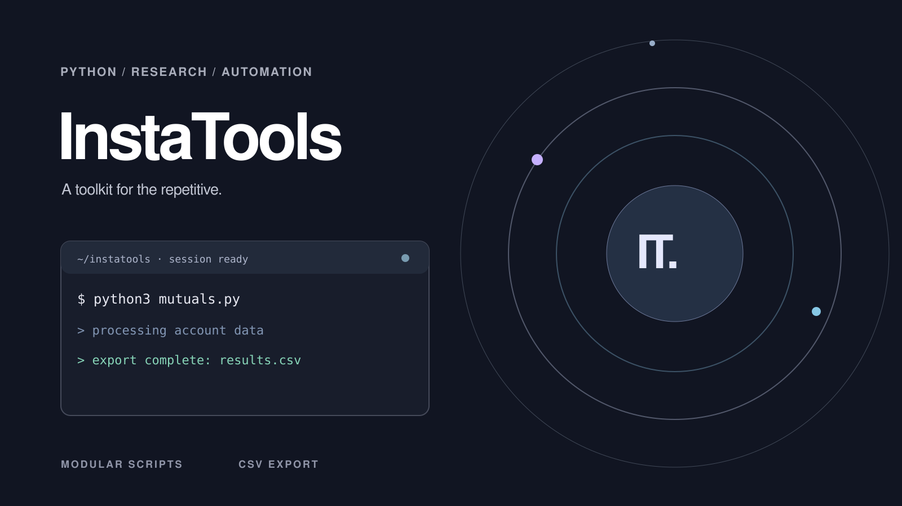

InstaTools
A collection of Python-based tools designed to reduce repetitive work around account research, data handling, and automation.

Concept artwork created for this portfolio; not a product screenshot or live dashboard.
What it's about.
InstaTools brings together purpose-built Instagram-related scripts for research and repetitive account workflows. Rather than one monolithic application, the repository organises different tasks into separate tools, making it easier to pick the workflow that matters.
The documentation highlights continued expansion through tools named Chronos, Delta, Hunter, Sphinx, and Spider, as well as interface improvements and CSV export support across many scripts.
Made to do more.
Key functions described in the project documentation and portfolio.
Modular tools
Individual scripts address specific research and account-related operations.
Data export
Many tools can save processed results in CSV format for further analysis.
Session handling
The documented setup includes browser-session preparation through a cookies script.
Growing collection
The toolkit documents additions including Chronos, Delta, Hunter, Sphinx, and Spider.
Under the hood.
Technical approach
The project uses Python scripts with an installation flow based on repository cloning, dependency installation, and session preparation. The README documents Linux, Windows, and macOS workflows along with an update script.
The project roadmap mentions configuration support, an interactive menu, stronger account protection, and further documentation; the original portfolio also announces InstaTools 2.0. These are planned improvements, not features presented as already shipped.
git clone https://github.com/new92/InstaTools
cd InstaTools
python -m pip install -r requirements.txt
python3 cookies.pyConsult the repository README for complete setup instructions, requirements, and platform-specific notes.
Worth noting: InstaTools is source-available under the InstaTools Non-Commercial License, not an open-source license. Commercial use requires prior permission. Users should review the platform’s rules and protect their account credentials.
Project focus
- Python
- Automation
- Research
- CSV
Find the project
Source code, full documentation, updates and contribution guidelines are available on GitHub.